A store digital twin with synthetic shoppers who can see — for store owners, brand marketers and research teams.
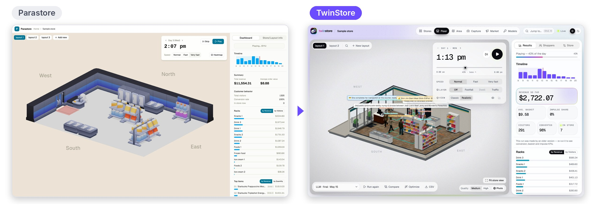
TwinStore is built on Parastore by intellicia, released under the MIT License.
I. Overview
TwinStore builds on Parastore, the open-source project released by intellicia, and extends it into a store digital twin that store owners and marketers can put to work right away. It recreates the store on screen and lets virtual shoppers do their shopping there, so the effect of a display, a price or a promotion is visible before anything changes in the real store.
The main changes at a glance
Area
Parastore
TwinStore
Getting started
Install developer tools and start it from the command line
Double-click one icon
Building a store
Place every shelf on an empty floor by hand
Start from 82 ready-made store formats, or recreate a store from a floor plan or shelf photos
How shoppers decide
They read a written description of the store
They look at the shelf and read price tags and promotion signs before choosing
The store on screen
A toy-like 3D store with block characters
A realistic 3D store, lifelike shoppers, and a photo mode for still images
Conditions of the day
One ordinary day
19 situations: weather, weekday, holidays, local events and more
Reading results
Totals for revenue and visitors
Side-by-side comparison, automatic layout optimization, one shopper's full trip and an interview afterwards, and an assistant that answers questions about the results
Marketing research
None
A marketing studio with eleven tools: A/B tests, shelf tests, concept tests, conjoint analysis, price checks, inventory review and more
Trade area
None
Neighborhood map, competing stores, and how nearby shops lift each other
Real store data
None
Build the store from shelf photos, receipts and sales records, and check results against them
II. What is a synthetic shopper?
A synthetic shopper is a virtual customer played by AI instead of a real person. Each one is a specific individual — an age, a gender, a job, a budget, shopping habits and a reason for coming in today — and the AI decides where that person would walk and what they would buy.
1. What a synthetic shopper looks like
A concrete person, for example: "office worker in their thirties, stopping by at lunch, about $8 to spend, cutting back on sugary drinks"
Hundreds to thousands of them are created automatically for each hour of the day, based on the store's address, opening hours and neighborhood
Each shopper walks in, follows the aisles, stops at shelves, decides whether to buy and pays at the checkout
2. What you can do with them
Test a store change before making it: send the same shoppers through a store with moved shelves, products or checkouts and compare the results
Test prices and promotions in advance: see what a discount, a 1+1 offer, a new price tag or eye-level placement does before it reaches the shelf
Run consumer research fast: put packaging, price points and preference questions to a panel of virtual respondents within minutes
Ask why: ask a virtual shopper the question real customers rarely answer — "why didn't you buy it?"
3. Advantages over field tests
Time: field tests and surveys that took weeks finish in minutes to hours
Cost: test many options at once, without moving fixtures or recruiting panels
Fair comparison: two options are compared on the same shoppers and the same day, so weather and chance don't swing the result
Iteration: try again as often as needed, and take only the best option to the real store and to real customers
III. How Parastore worked
Parastore was intellicia's prototype for taking the synthetic consumers it used in surveys into a physical store. It drew one store on screen and showed, in 3D, AI-generated shoppers moving through it over a day.
1. Workflow
Register the store: name, address, store type, opening days and hours
Create the shoppers: AI built shopper types (lunchtime office workers, nearby students, and so on) and hourly visitors from the address and store type; an optional data file could shape the mix
Lay out the store: place shelves, fridges and checkouts one by one on an empty grid, and upload the products and prices for each shelf as an Excel file
Run the simulation: compute a day of shoppers visiting the store
View results: replay the shoppers in a block-style 3D store, and see total revenue, visitors, conversion, and revenue rankings by shelf and product
2. How its shoppers decided
Shoppers received the store layout and the product list as text
They decided in three steps: choose a shopping pattern for the visit, pick the items to buy, then add whatever caught their eye on the way
What the shelf actually looked like — the packaging, the price tags, the promotion signs — played no part in their decision
3. What TwinStore set out to improve
Drawing every store by hand from an empty floor took a long time
Shoppers could not see the shelf, so packaging, price tags and promotion signs could not be tested
Comparing two layouts meant running each one and checking the numbers by eye
The day's conditions — weather, weekday, events — could not be changed
There was no way to look into an individual shopper's path and reasons
There were no tools for marketing research, trade-area analysis, or real store data such as shelf photos and receipts
Installing and running it required developer tools and the command line
IV. What TwinStore changes and adds
TwinStore redesigns every step, from building the store to reading the results, and adds marketing research and trade-area analysis as new areas of work. In the comparison figures, Parastore is on the left and TwinStore on the right, both captured from the running programs.
1. Installation: one icon to start
TwinStore runs as soon as you unpack the download and double-click the icon. Parastore needed developer tools and typed commands, which kept it out of reach without IT support.
One icon of the same design starts it on Windows, macOS and Linux
On first launch it fetches only what it needs by itself and shows each step on a start screen; when everything is ready, a large “Open TwinStore” button appears
From the second launch on, it opens in seconds
A Quit button is always visible; closing the browser tab leaves TwinStore running, and installing a new version keeps every store and run
The built-in sample store works right away, with no AI service account required
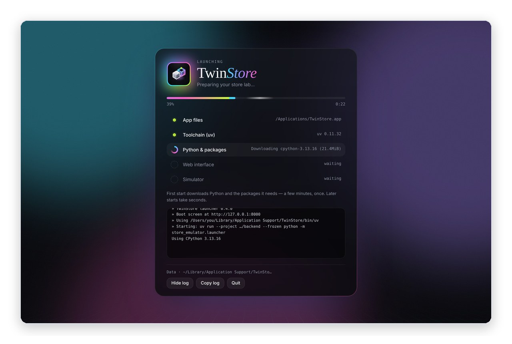
Figure 1. TwinStore start screen: each preparation step and its progress on one screen
The home screen is new as well. Parastore showed a list of stores; TwinStore shows at a glance what it can do and gives every store one-click shortcuts to its floor, marketing, shelf capture and trade-area screens.
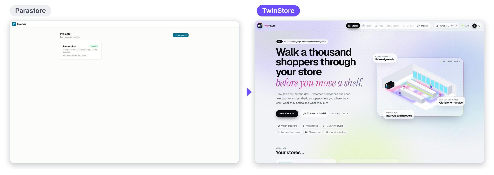
Figure 2. Home screen (left: Parastore, right: TwinStore)
A command window opened with one shortcut finds and opens any store or feature
Day and night color themes
The store list on the home screen filters by name, format or description as you type; when nothing matches, one button clears the search
Each store's card on the home screen draws that store's own layout
2. New stores: start from 82 ready-made formats
The moment a store is registered, TwinStore builds a complete store for its format — shelves, products, checkouts and seating included. Parastore took the store details only, and the layout had to be drawn from an empty floor.
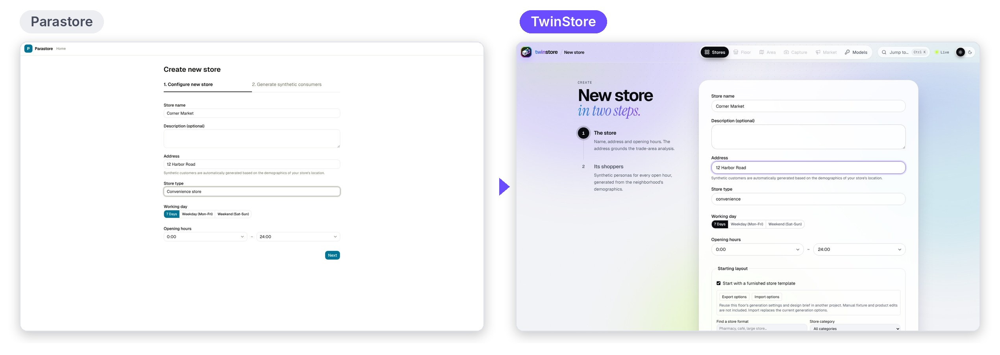
Figure 3. Registering a new store: TwinStore adds "Start with a furnished store template"
82 formats: convenience stores, supermarkets, hypermarkets, warehouse clubs, pharmacies, cafés, bakeries, pizza, sushi, ramen, Korean, burger, salad and ice-cream shops, fashion, footwear, eyewear, jewelry, music, bookstores, electronics, pet, garden and art-supply stores, refill and bulk grocers, care and mobility supply stores, fragrance boutiques, bubble tea cafés, Indian, Vietnamese, Mediterranean and Mexican restaurants, 24-hour pharmacies, an airport shopping gallery, a hospital convenience store, a museum gift shop, a cinema snack bar, a weekend farmers' market, a retro diner, pet and outdoor superstores, Thai and Turkish restaurants and more
Each format comes with its own product range, interior look (wall and fixture colors and finishes), seating and number of checkouts
25 multi-floor buildings — such as a department store, a campus hub, a dining hall, a daily essentials center, an airport shopping and dining building and a hospital services center — are created in one step
Everything stays adjustable after choosing:
which product categories to stock (for example, no alcohol in a convenience store)
the walls for the entrance, exit and checkouts, aisle width and shelf direction
the number of tables (up to 48), two-, four- and six-seat tables mixed in exact numbers, and their orientation, where seating starts relative to the entrance, and separate side-to-side and front-to-back gaps between tables
areas to keep clear for consultation, pickup or events
a layout priority in one step — wide circulation, more display space, an open center without seating, takeaway service, compact café seating, family dining, mixed party sizes or separated service counters — which sets aisle width, shelf runs, seating and checkout position together, on one floor or on every floor of a building
the interior design, from Nordic to retro, or the store's own colors
a separate number of products for each category, and one assortment applied to every floor of a building
opening hours and open weekdays, set floor by floor and day by day (for example 8:00–20:00 on weekdays, 10:00–16:00 on Saturday, closed on Sunday) and copied to every floor in one step; 0 to 24 makes an all-day store, and one click returns to the format's own hours and regular days off
Compare your layout with the format's default side by side, and download the floor plan as an image file
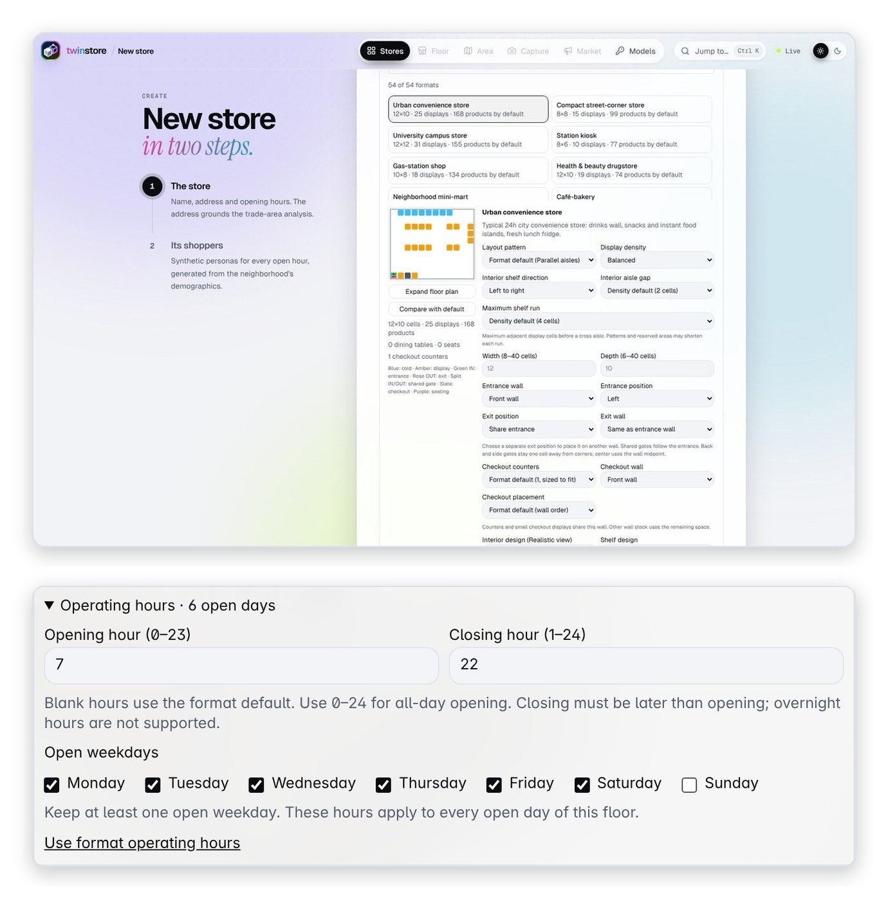
Figure 4. Choosing a format (top: a bubble tea café with a layout priority) and setting opening hours and weekdays for a floor (bottom)
A store can still hold several layout alternatives in tabs, but there are more ways to start a new one. Parastore offered two — copy an existing layout or start from an empty floor. TwinStore adds format templates, multi-floor buildings and floor-plan images.
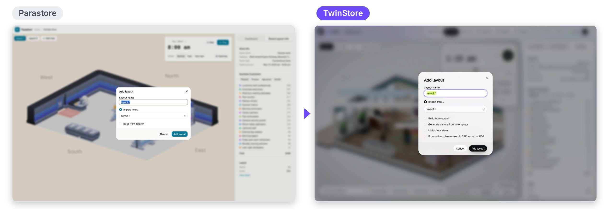
Figure 5. The new-layout window: from two ways to start to five
Start from a floor plan: upload a hand sketch, a CAD drawing or a PDF, and the walls, shelves and doors are read and drawn onto the store floor
Multi-floor buildings: choose a format and layout for each floor, create them together, and test each floor separately
Find a layout: search alternatives by name, floor or format, however many there are
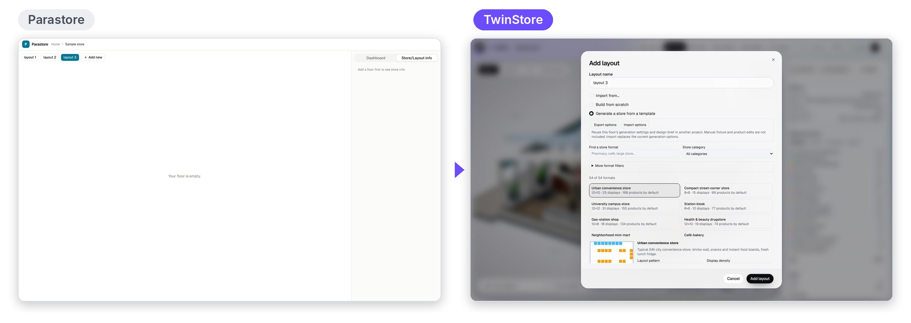
Figure 6. Where a new layout starts: Parastore from an empty floor, TwinStore from a complete store for the chosen format
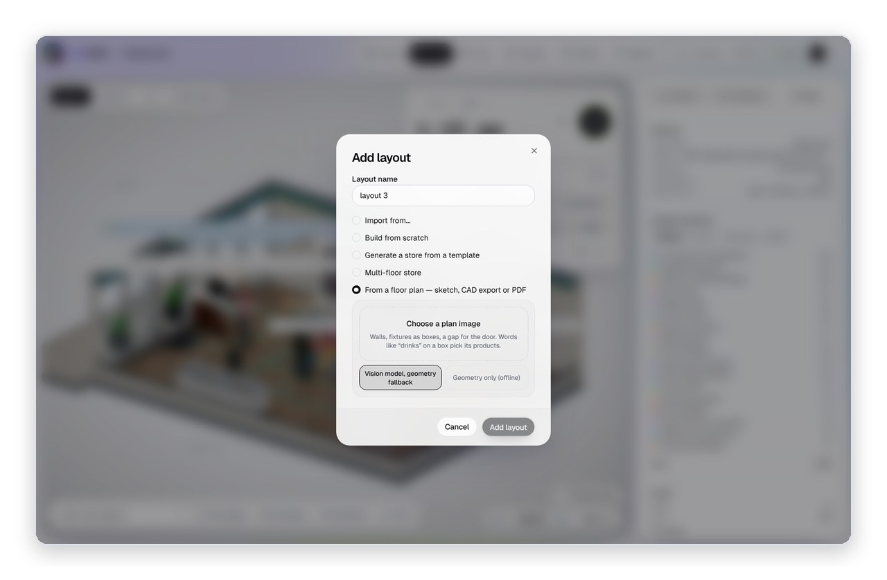
Figure 7. Starting from a floor plan: upload a sketch, a drawing or a PDF and the store floor is drawn for you
3. A realistic 3D store with lifelike shoppers
TwinStore rebuilds the store on screen to look like a real one. Parastore showed the path through toy-like shelves and characters; TwinStore shows the flooring, walls, ceiling tiles, lighting, glass doors, fridges, product packaging and price tags as they look in a store.
Figure 8. The 3D store: the same sample store in the middle of the day
Lifelike shoppers: fourteen realistic 3D people walk, browse shelves, turn their heads and blink; their gait matches their walking speed, and they stand still while they choose, pick up and pay
What shoppers are thinking: a short line above each shopper shows the thought of the moment, such as "comparing the nutrition labels"; at the door a shopper says what they came for, and a shopper who turns away says why
Move freely through the day: drag the time bar to any moment, play anywhere from real time to fast-forward, follow a shopper
Two looks: a light, fast standard view or the realistic view
Products by format: fragrance bottles, bubble tea cups with straws, refill packs and scanned real lemons, kiwis, sweet potatoes, onions and burger buns, each in its true shape
Checkouts: rounded checkout devices, marble counter tops and checkout screens showing their idle display
Ceilings and shadows: acoustic ceiling tiles as used in real stores, with the ceiling lights centered in the panels; shelves and shoppers cast shadows that match exactly what is on screen
Shopper's-eye view: walk the store through one shopper's eyes (Figure 10, left)
Photo mode: turn the current view into a photo-like still with real reflections and shadows, ready for a remodeling proposal or a presentation
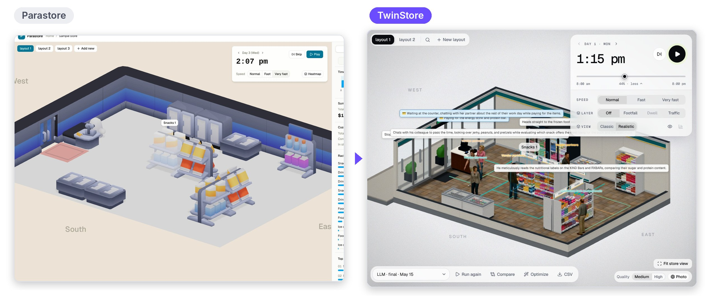
Figure 9. A closer look: in TwinStore, shoppers' movements and thoughts are visible together
4. Shoppers who look at the shelf, and stores built from photos
When a TwinStore shopper stands in front of a shelf, they look at it. They read the numbers on the price tags, the 1+1 signs, the was-price of a discount, and the colors and lettering of a new pack, then choose what appeals most. Parastore's shoppers only read a text list, so packaging and promotion signs had no effect.
Shoppers see the shelf from eye level and record the product that caught their eye, how strongly, and why
The same shopper makes the same choice under the same conditions, so two stores that differ only in layout or price are compared fairly
Shoppers can be shown real shelf photos from the store, not only the shelves on screen
When a run starts, shoppers can also be shown a lifelike 3D photo of each shelf above its chart: the photo for what catches the eye, the chart for names and prices. Photos are kept and taken again only when a shelf changes
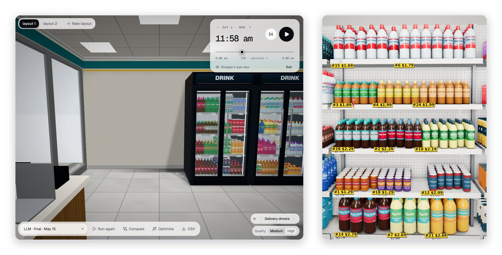
Figure 10. The shopper's-eye view (left) and the numbered shelf photo a shopper looks at when choosing (right)
The way shelf data is created changed too. In Parastore, products and prices were typed into a table or an Excel file, without product images. TwinStore reads the shelves, facings, product names and price tags from a phone photo of the shelf and turns them into shelf data.
One photo registers the products and prices of a whole shelf face
Recognized products are corrected right in the list, with empty slots and facing counts shown
Product photos also appear on the packages in the 3D store, so the store on screen looks like the real one
Several shelf photos can be uploaded at once and read in turn; up to 20 reviewed photos are combined into one store layout
The list of photos waiting to be read can be saved in the browser and picked up again after the window is closed
Names, prices and promotion text of placed products are searched and changed several at a time, and the result is saved as a new layout while the original stays as it was
A shelf whose products are finished can be copied to empty shelves of the same kind in one step and saved as a new layout
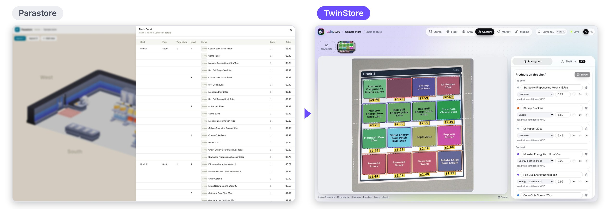
Figure 11. Shelf data: a table of products (left) and shelf data read from a shelf photo (right)
5. Running a day under different conditions
Before a run, TwinStore asks which shoppers will shop and on what kind of day. Parastore ran one ordinary day in a fixed way with a single button.
The run window is laid out so that a first-time user can start straight away. The first view asks only how shoppers decide and how many to send; the day's situation, neighborhood shoppers, the AI model and repeat-run settings sit folded under Advanced settings. A single line at the bottom sums up the choices made and the expected AI usage.
How shoppers decide
Fast shoppers: results in seconds without AI — ideal for screening many options
Conversational AI shoppers: plan their trip and make impulse buys
Seeing AI shoppers: look at the shelf and choose
Choice of AI model: use one model, or mix models from several companies in the proportions you choose so different shoppers are played by different models; the expected AI usage is shown before the run
19 situations: an ordinary day, a rainy commute, a heatwave weekend, a snowy evening, a cold-snap morning, a typhoon warning, a fine-dust alert, payday Friday night, exam week near campus, a big match night, a local festival, the Chuseok or Lunar New Year holidays, summer vacation, a competitor opening next door, a 1+1 drink promotion, a weekend snack sale, a supply disruption, a packed lunch rush and a night market
Your own situation: combine weather, temperature, weekday, crowding, local events, promotions, sold-out items and notes for the shoppers into a day of your own
Shoppers from the neighborhood: use the residents and passers-by from the trade-area analysis as the day's shoppers
Number of shoppers: sample a few for a quick preview, or run everyone for the final result. Each way of deciding comes with a sensible sample already filled in, so no run takes more time or money than it should
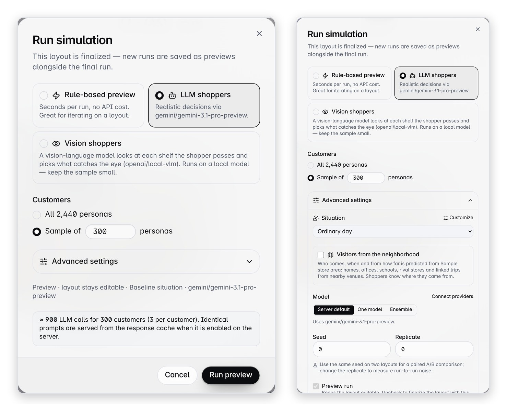
Figure 12. The run window: the first view asks only how shoppers decide and how many to send (left); the advanced settings hold the day's situation, neighborhood shoppers and the AI model (right)
6. Results, side-by-side comparison and automatic layout optimization
TwinStore does not stop at showing results: it tells you which option is better, and finds better layouts itself.
Results
Revenue, average basket, conversion, the share of impulse buys and the number of shoppers in the store at every moment
Floor colors show where shoppers walked most, where they lingered and where crowding is expected; Parastore showed only where they walked
Revenue and visitor rankings by shelf, the shelf heights shoppers picked from, and what caught their eye
Checks on the run itself, such as shoppers who could not be processed or purchases over budget
Download per-shopper results to Excel, and check them against real sales records or receipts
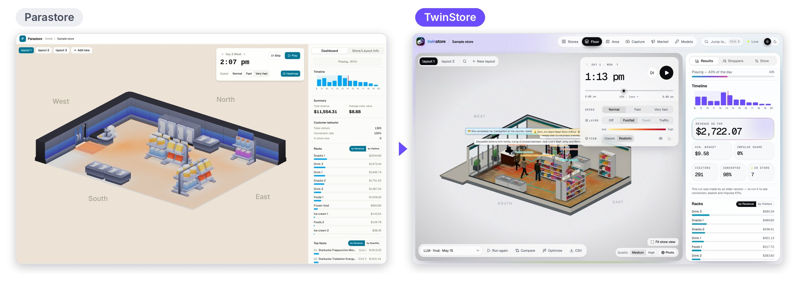
Figure 13. Footfall map: the floor turns red where shoppers walked most
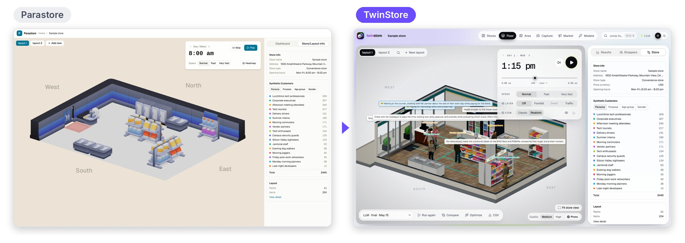
Figure 14. Store information: store details, shopper mix and a layout summary on one screen
Comparing two options
Pick two results and TwinStore pairs up the same shoppers, calculates the differences and tells you whether each difference is real or chance
The conclusion comes in one line, such as "Option B clearly earns more per visitor"
In Parastore, comparing meant switching between two result screens and checking the numbers by hand
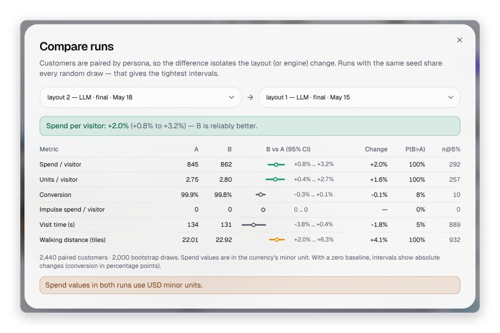
Figure 15. Comparing two results: the difference in every measure and the conclusion on one screen
Automatic layout optimization
Pick a goal — revenue per visitor, conversion, units sold, impulse revenue or shorter walks — and thousands of virtual shoppers test many candidate layouts to find the best one
Decide whether only product positions may change, or shelf positions as well
The final candidates are checked again by shoppers who look at the shelves
The original layout stays untouched; the winner is saved as a new layout
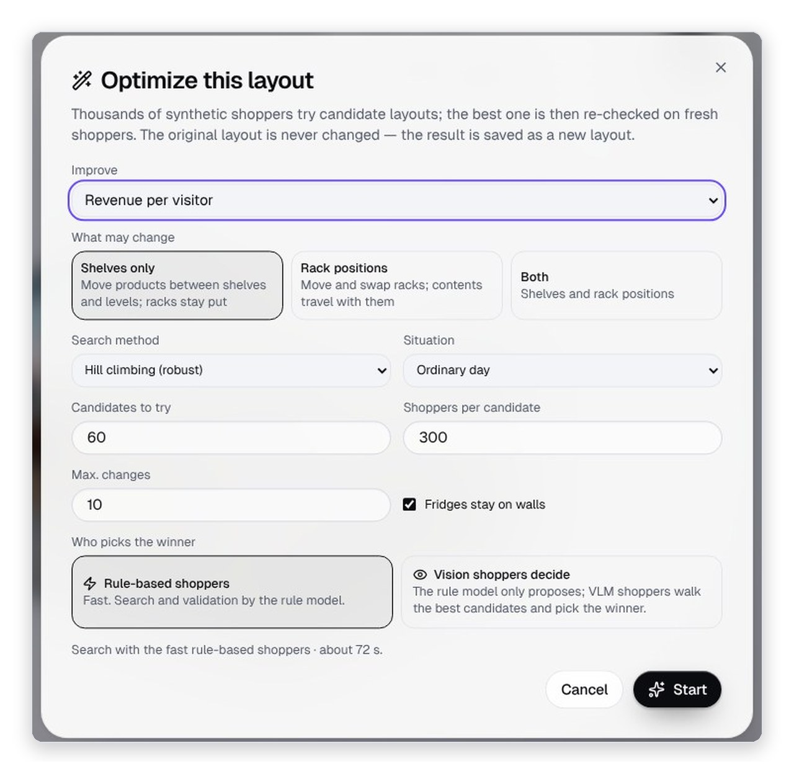
Figure 16. Automatic layout optimization: goal, what may change, how to search and who picks the winner
7. Following one shopper, and the interview afterwards
TwinStore does not reduce thousands of shoppers to totals. It lets you follow one shopper's trip from start to finish, then call that shopper back and ask why they did what they did. Parastore showed totals and rankings only.
Shopper list and trip
Sort the day's shoppers by top spenders, those who left empty-handed, impulse buyers or the longest visits, and search them
Open one to see their path and stops numbered on the floor plan, and at every stop the shelf they saw and what they were thinking, in time order
"Follow in 3D" jumps to the moment they walked in and keeps the view on them
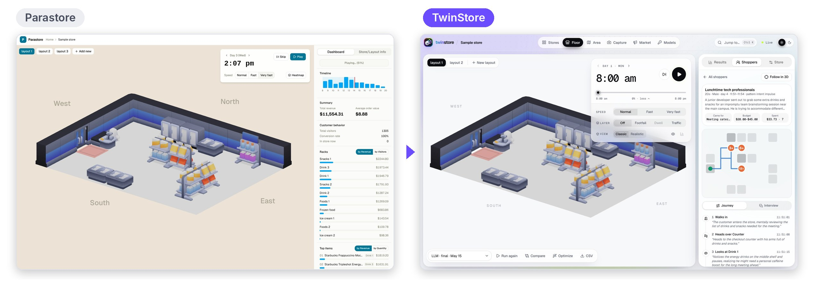
Figure 17. Reading results: totals and rankings (left), one shopper's path and thoughts (right)
Interview afterwards
Type a question — "Why didn't you buy anything at the snack shelf?" — and the shopper answers in their own words, from their personality and that day's trip
Each answer points to the steps of the trip it is based on, highlighted on screen
Questions worth asking are suggested from the trip
Group interview: put one question to 4–40 shoppers — everyone who left empty-handed, impulse buyers, top spenders — and see the answers grouped into themes, with how many gave each reason
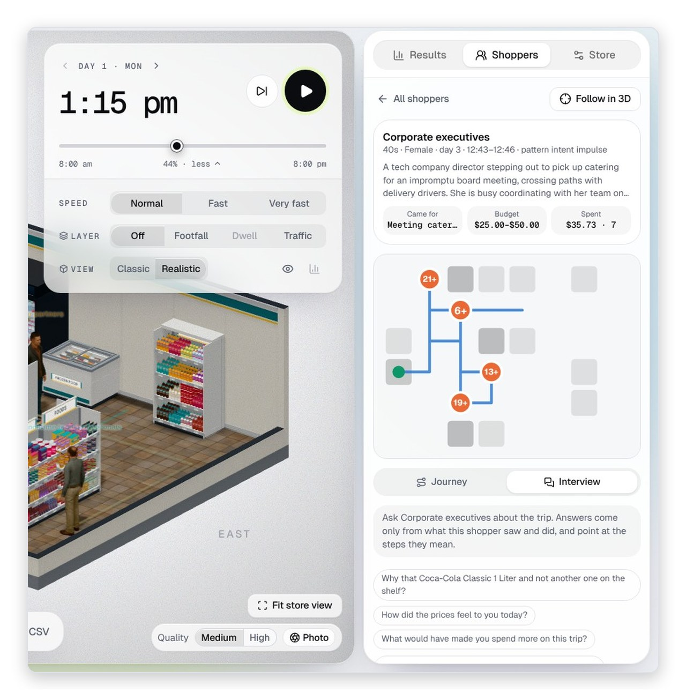
Figure 18. The interview screen: the shopper's profile, their path and suggested questions
8. Shelf checks and virtual shelf experiments (Shelf Lab)
Shelf Lab turns a real shelf photo from the store into experiment material. Without moving a single product or taking a new photo, you create "what if we changed this?" on the photo itself and see how virtual shoppers respond. Parastore had nothing like it.
Change the shelf on the photo
Swap two products, empty a run (a stock-out), put on a new pack, change a price tag or hang a 1+1 sign — all on the photo
Nothing outside the changed area moves, so any difference between the original and the edited photo comes from that change alone
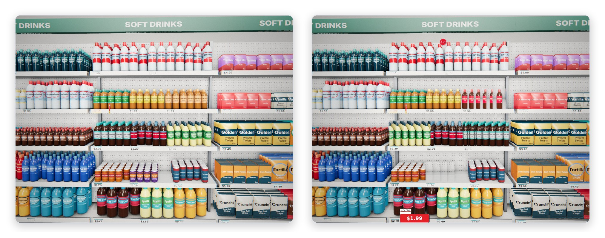
Figure 19. A shelf photo (left) and the same photo with a swap, a stock-out, a new pack, a new price tag and a promotion sign applied (right)
Photo versus on-screen store
The same shoppers look at the on-screen shelf, the numbered real photo and the original photo, and their choices are compared side by side
The products they picked are marked on the photo
Planogram checks and restocking
Match the head-office planogram against the real photo to find missing and misplaced products, and calculate how much revenue they cost per day
Missing products are ranked by contribution so you know what to refill first, with their place on the shelf located for you
Enter stockroom counts, the units each shelf needs, supplier pack sizes and costs, and get a restocking plan in whole packs within budget
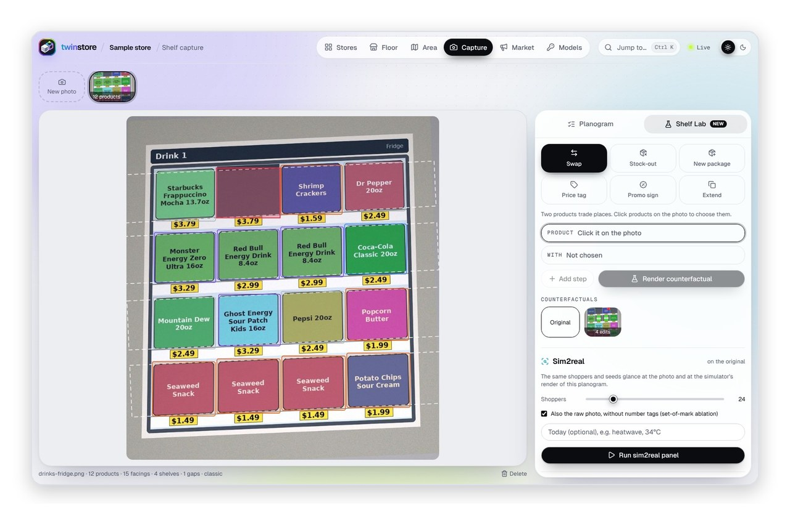
Figure 20. Shelf Lab: editing tools on the photo and the comparison settings
9. Trade-area analysis: the neighborhood and competing stores
TwinStore places the store in its neighborhood. It works out what is around it, where shoppers come from and how much a competing store takes away. Parastore had nothing like it.
Generate a neighborhood — residential, university, station, suburban, tourist or mixed, at a chosen density — or load streets and shops from a real map (OpenStreetMap)
A trade-area model splits shoppers between stores by distance and appeal, showing daily visitors, market share, catchment, average walking distance, visitors by hour and who comes
Open or close nearby shops and watch your store's shoppers change
Upload a storefront photo and its sign, entrance, window and upkeep are rated and fed into how strongly the store draws people in
Upload a competitor's shelf photo to compare price levels and product overlap; the same product is matched even when its name is written differently, such as the same brand and size of cola
See whether a neighboring shop brings you shoppers who visit both
Use the neighborhood's shoppers directly as the day's shoppers in a simulation; new virtual shoppers also reflect who comes on weekdays and at weekends, the busiest hours and how far people walk
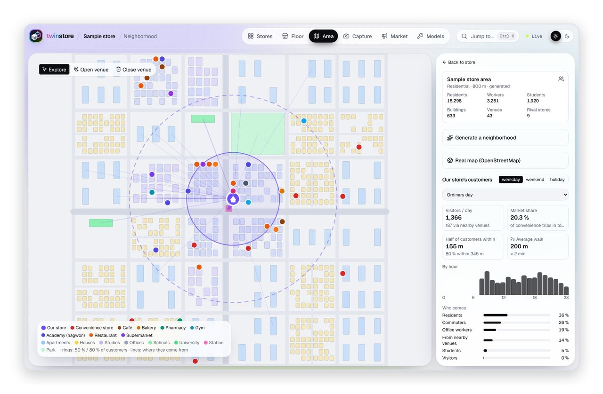
Figure 21. Trade-area analysis: the neighborhood map, your store's catchment and a visitor summary
10. The marketing studio
The marketing studio is a new workspace for brand marketers, product managers and research agencies. Prices, promotions, placement, packaging and staff scripts are checked with virtual shoppers before they reach the real store and real customers. It has eleven tabs, and any finished test can be duplicated and rerun with new conditions.
① A/B tests
Build a test option by bundling changes to a saved store layout: a new price, a discount that shows the was-price, a promotion sign (1+1, SALE, −30%), a move to eye level or another shelf, a new pack, or a price change across a whole category
Ready-made recipes for common tests: discount ladder, discount versus sign, eye level versus bottom shelf, price steps, a price increase, a new pack
Every option runs on the same shoppers and the same day as the baseline, so differences come only from what changed
Revenue, conversion, units per visitor and the units, revenue and buyers of selected products are compared by age group and gender, and a winner is named only when the difference goes beyond chance
Every test produces a report — summary and recommendation, design, charts and method — to save as a PDF or share, with optional AI-written commentary
Price steps: one product at five prices on the same shoppers shows the sales curve, price sensitivity and the price that earns the most
Price and sign together: a discount and a promotion sign, tested alone and combined on the same shoppers, show whether the two together do more than each on its own
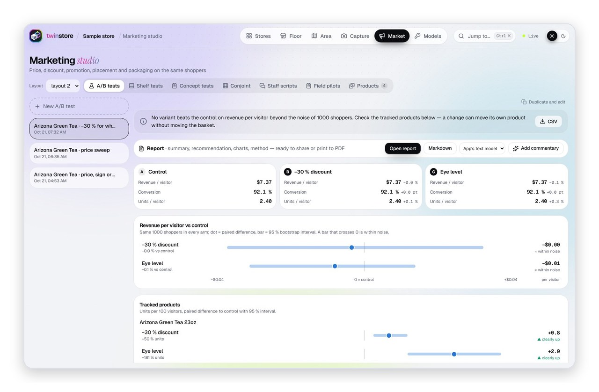
Figure 22. A/B test results: each option's results and the automatic report
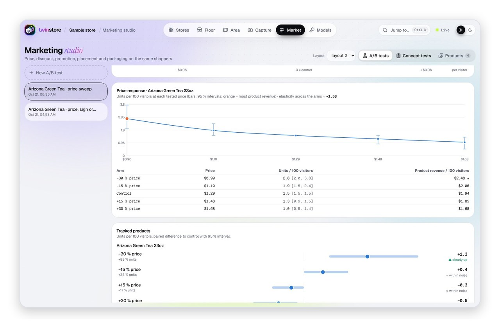
Figure 23. Price steps: how sales change with price, and the price that earns the most
② Shelf tests
The same respondents look at today's shelf and at the shelf with a new pack, price or sign, and say what they would take and what caught their eye first
The changed shelf is previewed on screen before the test
Pick share and stand-out are compared respondent by respondent
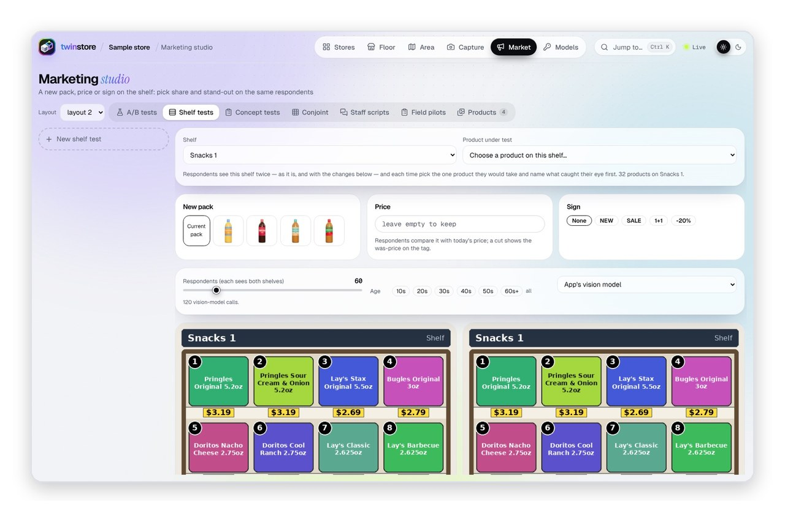
Figure 24. Designing a shelf test: today's shelf (left) and the changed shelf (right)
③ Concept tests
Up to four pack images side by side; virtual respondents drawn to age and gender quotas rate purchase intent, pack appeal, value for money and stand-out (on a 5-point scale), name an acceptable price range and a favorite, and add a comment
See the answer distribution, averages, top-two-box shares, preference shares, the acceptable price curves, tables by age and gender and the comments themselves, and download every respondent's answers as a file that opens straight in Excel, with every comment kept exactly as written
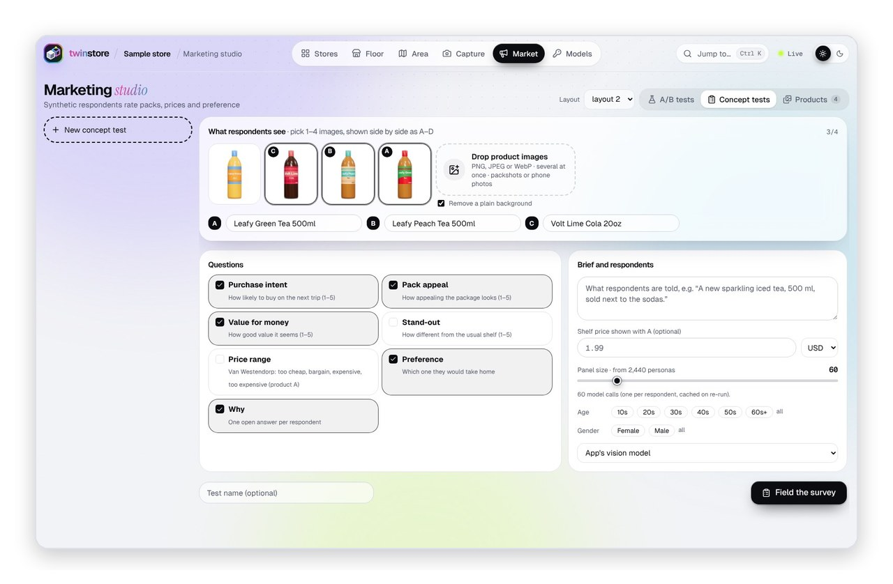
Figure 25. Designing a concept test: pack images, questions and respondent quotas
④ Conjoint analysis
Define a product's attributes (size, sugar, brand, a claim and so on) and price levels; each respondent gets their own choice tasks — two to four versions plus "none" — and picks one
See how much each attribute matters, how much each level is liked, and how much more shoppers would pay for it
The example choice task on the design screen always shows genuinely different products, exactly as a respondent will see them
In the market simulator, change the product line-up and prices and watch predicted shares — and the share-versus-price curve — update instantly
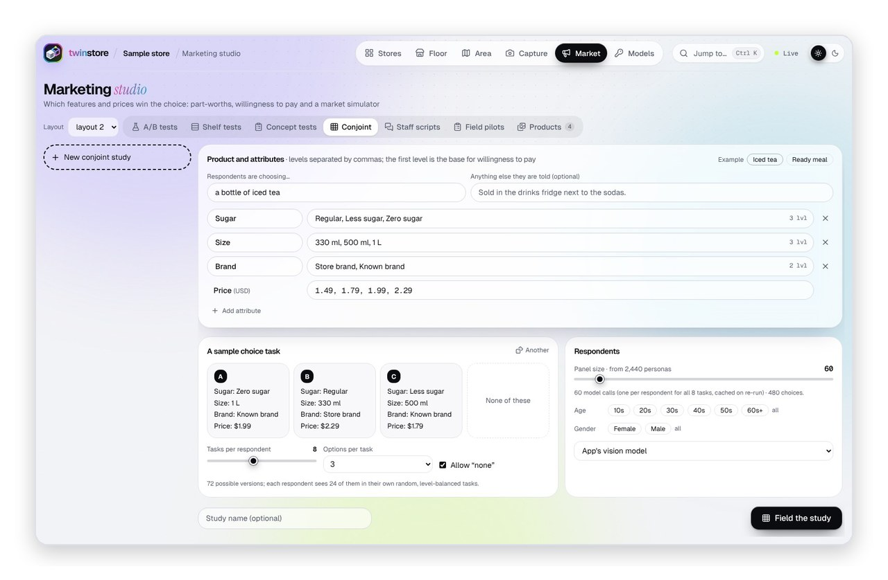
Figure 26. Designing a conjoint study: attributes and levels, prices and an example of the choice tasks respondents see
⑤ Staff scripts
Play two greetings, recommendations or replies to an objection to the same virtual shoppers separately, and compare purchase intent, trust and pressure
Take the better script on to a field pilot
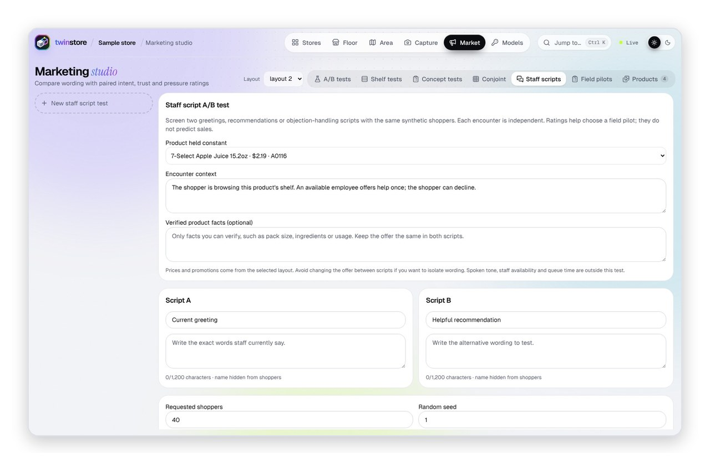
Figure 27. Testing staff scripts
⑥ Field pilots
Turn a staff-script test into a field schedule balanced across real shifts, with the sample size and duration worked out in advance
Bring in real encounter records, purchase records and checkout transactions, and keep track of missing records and corrections
Once the planned sample is complete, the difference in real conversion is judged
After the pilot, the result is recomputed with each staff member, shift and staff-shift pair left out in turn, to confirm that no small group drives it
Staff time per encounter is recorded, so the two scripts can be compared on the time they take
A cost scenario shows whether the extra conversion pays for the extra staff time, using the margin and labor cost the owner sets
⑦ Research protocols
Record the original plan of a study before it starts, and add every later change with its reason
See which items and planned sample sizes changed from the original plan, and download the full history
⑧ Price checks
Upload what the shelf labels say and what the checkout charged; the same products are matched and every price difference is found
Records whose product, pack size, date or purchase terms do not match are set aside with the reason
⑨ Competitor unit prices
Prices collected at competing stores are converted to a price per kilogram, liter or item and compared with the store's own products
Old observations, conditional offers and out-of-stock items are left out of the comparison, with the reason shown
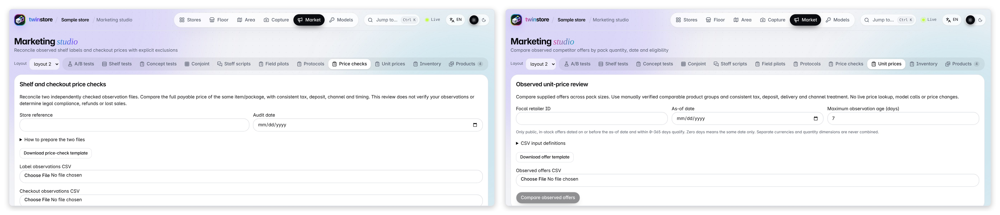
Figure 28. Price checks (left) and competitor unit prices (right)
⑩ Inventory review
Upload opening stock, receipts of goods, sales, returns and closing stock for a period; the book stock is reconciled first
Records that do not add up — closing stock that does not reconcile, negative stock, more returns than sales — are pointed out one by one
Once the records agree, period margin, stock turnover and net sell-through are calculated from the records alone, without AI
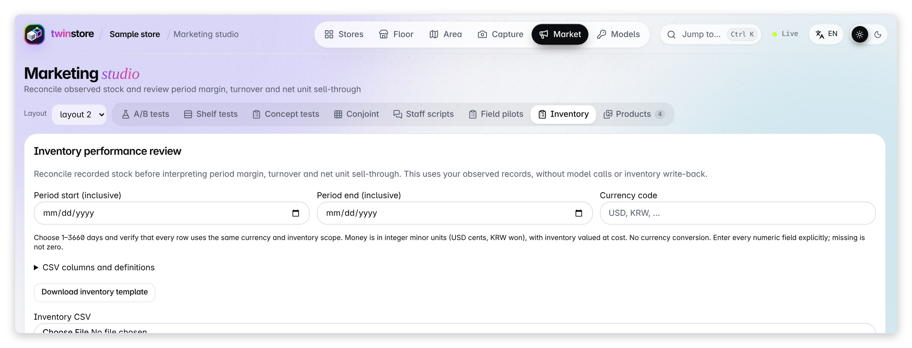
Figure 29. Inventory review: choose the period and currency and upload the stock records
⑪ Products
Upload packshots or phone photos of packs; the background is removed, the name, brand and size printed on the pack are read to name each product, and it is linked to the product on the shelf
The same images are used in A/B tests, shelf tests, concept tests and Shelf Lab
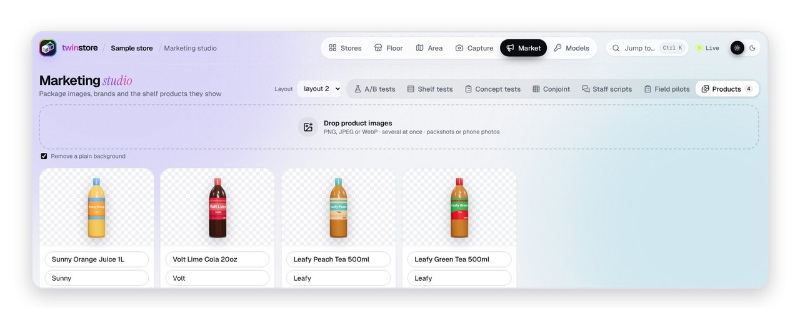
Figure 30. Product images: packs with the background removed, linked to shelf products
11. AI model settings and convenience
In Parastore, changing the AI model meant editing a settings file. In TwinStore, models are connected and chosen on screen.
Register OpenAI, Anthropic, Google, Qwen, OpenRouter or your company's own server, test the connection with one button and set a default model for each
Access keys are stored only on the computer you use
Without a key, TwinStore checks your computer, downloads a model of the right size and runs it on the computer itself — a larger one when there is a graphics card
The built-in model also answers the AI assistant, interviews and questions about runs, so these work without any key; when a model cannot answer, TwinStore says so in plain words instead of showing empty results
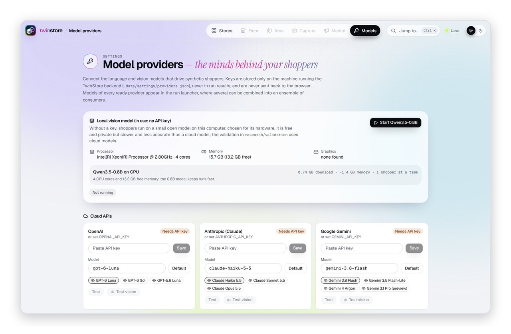
Figure 31. AI model settings: the built-in model and each provider's connection
Every screen has a top bar for stores, floor, trade area, shelf capture, marketing and models, and a command window opened with one shortcut finds any feature
Day and night color themes
On phones and tablets, the store and the results stack vertically, so the whole store stays visible on a small screen, and the time bar and the run, compare and optimize buttons stay within reach
The home screen, the top bar, the new-store guide, format search, command search and the run window speak English, Korean, Chinese, Japanese, Spanish or French, and the choice is remembered
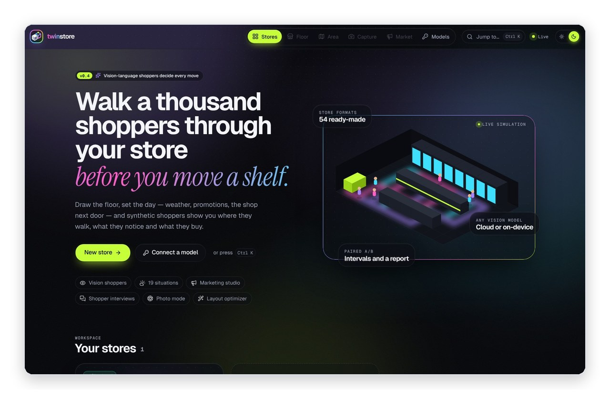
Figure 32. The home screen in the night theme
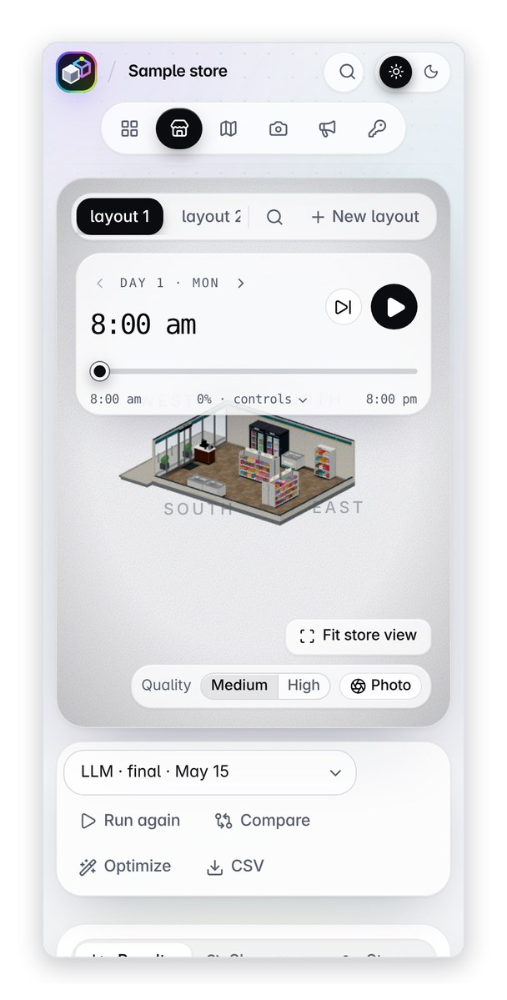
Figure 33. The store on a phone: the time bar and the run buttons fit in one hand
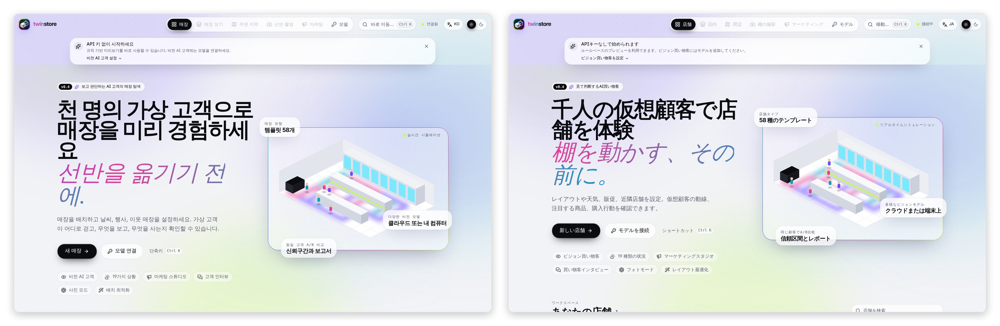
Figure 34. The home screen in Korean (left) and Japanese (right)
12. An AI assistant you can talk to
TwinStore turns a sentence about what you want to do into the right screen and a first draft. Nothing runs on its own: drafts are checked and edited before they run.
Ask in a sentence: inside a store, the command window shows what it can take; type "Would a 1+1 sign on cola sell more than a 20% cut?", and TwinStore opens the right place — an A/B test, a conjoint study, a staff script, a layout change, an optimization goal, a search for shoppers, the neighborhood, or a question about the last run — and drafts from the same words
Draft the test: for an A/B test or a conjoint study, write the question it should answer and get the variants, attributes and price levels, and the products to track; the last run's sales are used to find the real best seller
Describe instead of filling in: "rainy Friday evening, the game next door at 7, 1+1 on Pepsi, out of ice cream" becomes the weather, weekday, event, promotion and stock-out of the day; "a busy campus street, two rival stores nearby, a café next door" sets up the neighborhood
Help with writing: describe the store in one sentence on the new-store page and the form fills itself in, to be checked field by field; the form also writes the customer profile — who comes, when and why — and a staff-script test writes script B from script A
Change the store in words: in the Store tab, write “put the cola at eye level, 10 % off all ice cream and a SALE sign on the chips” and see the edits listed; once checked, they are saved as a new layout and the current one stays as it was. When a new layout is generated from a format, a design brief such as “wide aisles for strollers, checkout by the door” is read into the aisle width, checkout position and other settings
Goals and shoppers in words: in the layout optimizer, “more revenue per visitor, keep the fridges where they are, at most six changes” sets the goal, what may move and the limits; in the shopper list, “women in their 20s who stopped at ice cream but bought nothing” finds those shoppers, ready for a group interview
Ask about a run: in the results, pick one of the questions suggested from the run's own numbers or ask your own, such as "which shelf converts worst, and why might that be?", or pick a shelf on the floor and ask about it; the answer is built only from that run's numbers and shows the figures it used; when two runs are compared, it explains what changed, on which shelves, products, hours or groups, and what lies within noise
Read the answers: on concept, shelf, conjoint and staff-script results, respondents' reasons are grouped into themes with a short commentary on the numbers, marked as AI-written in the report
Questions for interviews: follow-up questions fitted to a shopper's trip and the conversation so far, and for group interviews, questions and the group to ask drawn from the run's numbers
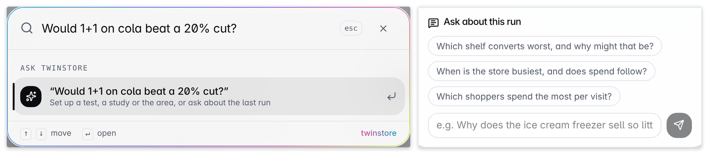
Figure 35. A request typed into the command window (left) and "Ask about this run" in the results (right)
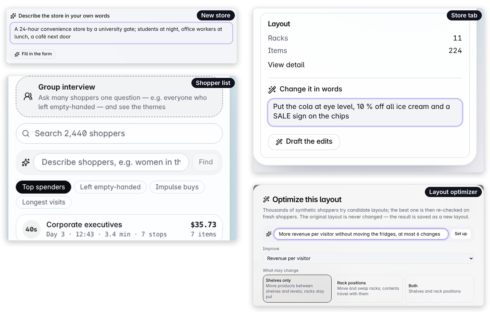
Figure 36. Working in words across TwinStore: describing a new store, changing a layout, setting an optimization goal and finding shoppers
V. Use cases
With TwinStore, the people who run stores and the people who sell products answer their own questions with the same tool.
1. Store owners and store managers
Before a remodel: bring the current store in from shelf photos and a floor plan, test two or three options with different checkout positions or shelf directions on the same shoppers, and build only the best one
Promotion planning: see the effect of a 1+1 offer or a discount on a rainy day, on payday or during a local festival, and time the promotion accordingly
Price control: check regularly that shelf labels match what the checkout charges, and which products cost more per unit than at nearby competitors
Shelf management: find missing products from shelf photos, refill them in order of lost revenue, and plan restocking within budget
New sites: load the neighborhood map and competing stores for a candidate site and compare expected visitors and market share
2. Brand marketers and product managers
New packaging: narrow three or four pack designs with a concept test, then place the finalists on a real shelf photo and check stand-out with a shelf test
Product configuration and price: set size, flavor and price with conjoint analysis, and learn how much more shoppers would pay for each feature
Retailer negotiations: show how placement (eye level, by the checkout) and discount depth change sales with an A/B test, and bring the automatic report to the meeting
3. Research agencies and consultancies
Study design: try out questionnaires and stimuli on a virtual respondent panel before the main study
Hypotheses: collect the "why I didn't buy" that real respondents rarely give, through shopper interviews and group interviews
Field validation: carry the best staff script into a field pilot and confirm it with store results
VI. Expected benefits and closing
TwinStore makes decisions about stores and products faster, cheaper and more certain.
1. Expected benefits
Faster decisions: field tests and surveys that took weeks finish in hours, and only the strongest options go ahead
Lower cost: weak options are filtered out before fixtures move, prototypes are made or panels are recruited
Evidence that stays: every test runs on the same shoppers and the same day and ends in an automatic report, ready for internal reviews and retailer meetings
Connected to the store: the store is built from shelf photos, receipts and sales records and results are checked against them, so the store on screen moves with the real one
Anyone can use it: install with one icon, work in one of six languages, and start the first test right away from a ready-made store and a recipe
2. Closing
TwinStore takes the idea Parastore demonstrated — testing a store with virtual shoppers — and turns it into an everyday tool for the people who run stores and sell products. Before you change the store, before you set the price, before you print the new pack: check it in TwinStore first.